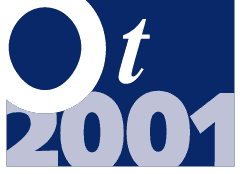

| Sponsor OT2001 |  |
OT2001 Sponsorship Package
OT is the foremost conference on contemporary software practice. Now in its 9th year, this event regularly attracts between 150 and 250 participants, the vast majority of whom play a leading role in product recommendation and acquisition: our audience comprises both technical software specialists and IT management.
In addition, the conference attracts prominent industry figures: for example, over the past two years, participants included Bruce Anderson, Kent Beck, Frank Buschmann, James Coplien, John Daniels, Ian Graham, and Steve Vinoski. This conference is firmly established as the event at which new ideas and fresh thinking on software practice emerge.
OT2001 will explore a broad range of subjects from leading-edge technology, through pioneering software development and deployment practices, to innovative techniques for managing projects and the people that make up the project team.
Becoming a sponsor of OT2001 provides the highest possible profile at the event. Sponsors receive the following benefits:
H Prominent billing as a sponsor in all promotional activities and materials. The OT2001 web pages play a major role in promoting and administering the event. The web site carries full details of all aspects of the conference, and is used heavily by potential conference participants for finding out about the event, making session submissions, and making bookings.
In addition 30,000 brochures are being distributed to the following lists:
• OOPS Group members.
• Members of other selected BCS Special Interest Groups.
• Selected pertinent magazine readerships.
H A supply of conference brochures. Considerable mutual benefit can accrue if sponsors send out copies of the brochure to clients. Sponsor mailing lists can be incorporated into the event's marketing plan. Full confidentiality is guaranteed to any sponsor sending labels to our mailing house.
At the conference
H Display stand and demonstration area. Display stands and demonstration areas are provided in a large room which is also used for conference participants to take refreshments and luncheon. Each display stand and demonstration area is equipped with a power supply, lighting, and shell scheme stand if required.
H
Speaking slot in the conference programme.
Each sponsor has the option of providing a speaker to present a full (non
sales/marketing) session in the conference programme. Well-known speakers
tend to attract larger audiences, and so we encourage sponsors to provide
headline presenters.
H
Five conference places. These places may be used for the
sponsors' own staff or for client personnel. The full attendance fee for
non-sponsors is £1350 per participant.
H
Logo on items given to all conference participants. Such
items include the cover of the conference documentation, workbook, and
other free handouts to participants.
H
Space for a feature in the conference documentation. This
space can be used for any form of A4 material, including leaflets and copies
of advertisements.
H
Large signs in the main conference room and at other key locations in the
venue. Each sign will contain Sponsored by followed
by the sponsor's logo.
After the conference
H
A list of the names and addresses of all conference participants.
This list is provided for each sponsor to use whenever and however they
like.
The sponsorship fee is £6250+VAT. The number of sponsors is restricted to four.
For further details contact David Harvey:
| Telephone | 020 7568 5106 |
| sponsors@ot2001.org |
Web site host: TriReme International Ltd